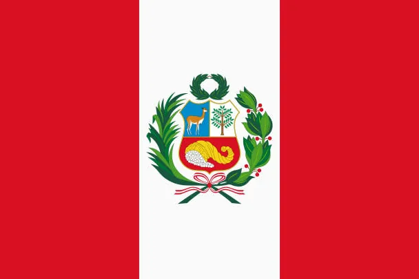

About Me
I’m Omar, a quantum-computing enthusiast from Peru. When I’m not debugging qubits or grinding at the gym, I study full-stack web dev and help my LDS community. I love merging science, spirituality, and good UI design.
Lima, Peru

Lima lies on the Pacific coast and mixes colonial history with cutting-edge gastronomy. Ceviche, ancient ruins, and vibrant tech meet-ups make the city unique.